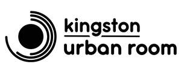

Trade Mark Journal No.2026/006 6 February 2026
UK00004310814 15 December 2025 (35,41,42)

- Class 35
- Public relations services; Advertising services to promote public awareness of environmental issues and initiatives; Advertising services to promote public awareness of environmental matters; Public opinion surveys; Compilation of directories for publication on the internet; Preparation of expert evaluations and reports relating to business matters; Preparation of project studies relating to business matters.
- Class 41
- Education services relating to conservation of the environment; Education services relating to conservation; Organisation of exhibitions for cultural or educational purposes; Provision of visitor attractions for cultural purposes; Organising community cultural events; Education and training relating to nature conservation and the environment.
- Class 42
- Consultation in environment protection; Services for the planning of residential communities; Planning and design of residential communities; Town planning advisory services; Planning in relation to town planning and commercial town planning; Town planning; Urban planning; Research on building construction or city planning; Architectural and urban planning services; Research on urban planning; Planning [design] of buildings; Architectural services relating to land development; Research relating to environmental protection; Advisory services relating to environmental protection; Research relating to architecture; Advisory services relating to planning applications; Urban design; Architectural design for town planning; Design of buildings; Preparation of reports relating to real estate planning; Preparation of reports relating to design; Preparation of reports relating to architecture; Preparation of reports relating to technical project studies for construction projects; Consultation services relating to architectural planning; Architectural planning services.
The Kingston upon Thames Society